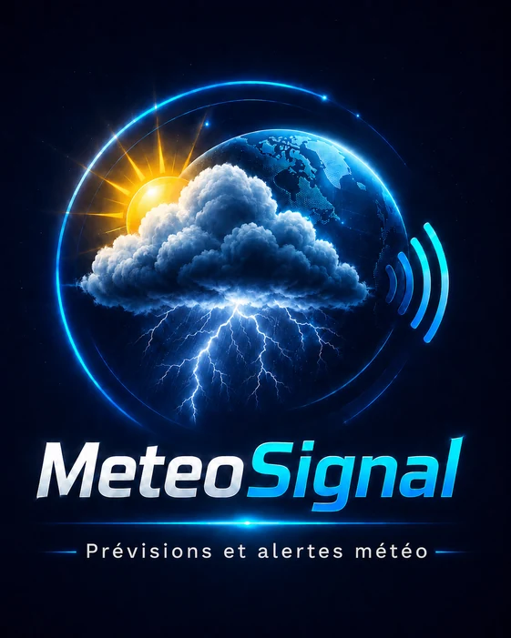

Identité officielle
À propos de MeteoSignal
MeteoSignal réunit les conditions actuelles, les prévisions, l’astronomie, la qualité de l’air et des signaux météo locaux dans une expérience rapide et lisible.
- Version publique
- 1.5.2
- Application Android
- fr.meteosignal.app
- Plateformes
- Android, Web, PWA, Windows et Linux
Une identité commune
Le globe, le soleil, le nuage, les éclairs et les ondes composent le symbole officiel de MeteoSignal. Cette identité est conservée sur l’icône, l’écran de lancement et les applications installées, sans recoloration ni réinterprétation.
Données météo
Les prévisions et la recherche géographique s’appuient sur Open-Meteo. Les alertes locales affichées par MeteoSignal sont indicatives et ne remplacent pas les vigilances officielles.